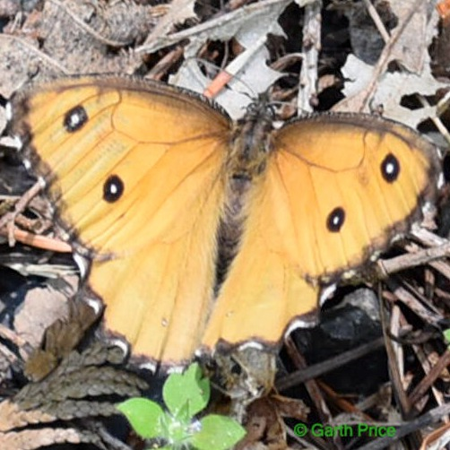
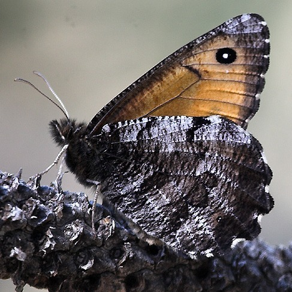

Oeneis nevadensis
- Common name
- Great Arctic
- Family
- Nymphalidae
- Family common name
- Brush-footed butterflies
- On the wing
- L April to L September. Peak in June-July.
Biennial (2 years to go from egg to adult).
- Habitat
- Openings in moist mountain coniferous forests.
- Larval host:
- Grasses.
- Nectars seldom
- Sometimes visiting bistort and popcornflower.
- Abundance
- LU-LC
- Comments
- Much more common in even-numbered years. Fond of landing on dirt trails and fallen trees.
Range Map
Seasonality